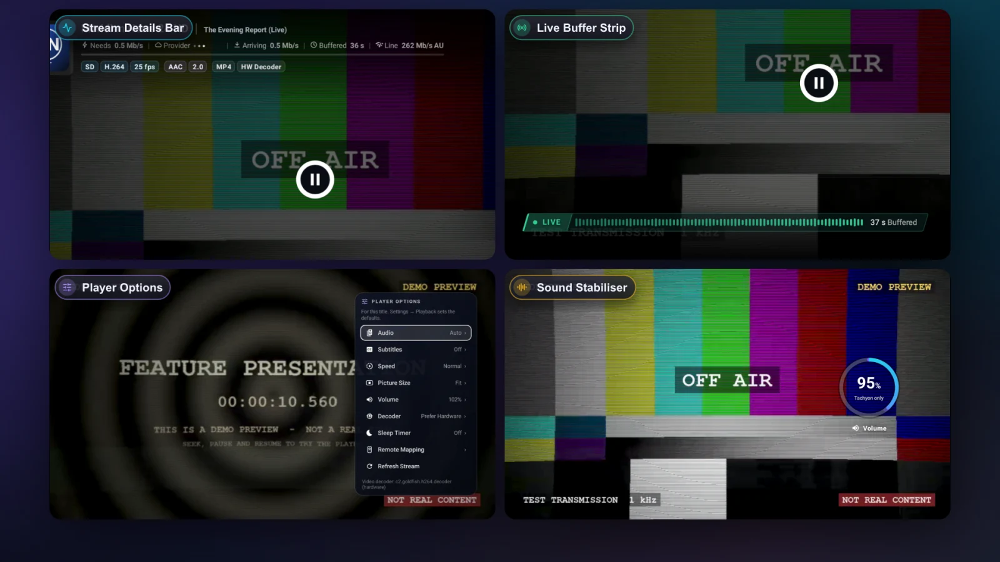

Reading the Stream Details: Tags and the Stream Info Line
What Tachyon's stream tags and the Stream Info line (Needs, Provider, Arriving, Buffered, Line) tell you, and where a slowdown comes from.

When a channel stutters, the big question is why: your internet, the provider, or the device? Tachyon's player shows what it knows, so you can tell at a glance.
Where They Show
With the player's controls up — and for a few seconds after a channel starts — the header shows:
- the Stream Info line: Needs · Provider · Arriving · Buffered · Line;
- a row of stream tags under it: the picture, the sound and how it's delivered.
Both come with Settings → Playback → Show Stream Details (on by default). The Pin Stream Info button (a gauge) in the bottom bar pins the line on the picture; each press moves it, from the top to the bottom, or off. Channels, movies and series each keep their own spot.
The Stream Info Line
| Part | What It Means |
|---|---|
| Needs | How fast the stream has to arrive to play smoothly: its own bitrate. |
| Provider | How fast the provider sends it to you, measured from the stream itself. The letters after it are the country its server is in. |
| Arriving | What arrives this very moment. It jumps while the buffer fills; on a movie it reads Buffer Full once full, and From Storage while it plays a part already stored on the device. |
| Buffered | Seconds of picture stored ahead of you — the cushion that rides out a hiccup. |
| Line | Your internet, two ways, taking turns: your own line, and the route toward the stream's server. Dots: not measured yet. |
| The bar | Green fills as far as the provider's speed reaches; the white mark is what the stream needs. |
| The LIVE strip | Green: smooth. Amber: a close call. Red: falling behind. |
What It's Telling You
| What You See | Most Likely | Try |
|---|---|---|
| Provider well above Needs, Buffered holding or growing | The stream is fine. | If the picture still stutters, it's the device: try another Decoder, or another version of the channel. |
| Provider below Needs, Line well above it | The provider (or the route to it) is too slow. | Another version of the channel or title, later, or tell your provider. |
| Your line close to Needs or below it | Your internet. | Move closer to the Wi-Fi router or use a cable; pause other downloads at home. |
| Provider and Arriving stay at dots, Buffered stuck at 0 s | Nothing is coming from the provider. | The channel may be off air: try another; if none play, check the service. |
| Your line is fast, but the route to another country is slow | The long way to the provider's server. | A copy from a closer server, another time of day, or Deeper Buffer for Movies & Series. |
The Stream Tags
Tags say only what the stream itself reported. If something isn't known, no tag is shown — a picture whose scan type wasn't reported shows FHD, never a guessed 1080p.
| Tag | Meaning |
|---|---|
1080p · 1080i · 720p | Desktop Picture size; p = progressive, i = interlaced. |
4K · QHD · FHD · HD · SD | The picture size (on Android always; on a computer when the stream didn't say progressive or interlaced). |
H.264 · HEVC · AV1 · MPEG-2 | The video codec. |
HDR10 · HLG · Dolby Vision | A high-dynamic-range picture. |
50 fps | Frames per second. |
AAC · AC-3 · E-AC-3 · DTS · MP2 | The sound's codec. |
2.0 · 5.1 · 7.1 | Sound channels. |
3 Tracks | More than one audio track — pick one with Audio. |
TS · MP4 · MKV | The container: what the stream or file is. |
HLS · DASH · RTSP | How it's delivered. |
Desktop Index First · Index At End · Index Cached | Where a movie's index sits — at the end means a slower start; cached means this start skipped the wait. |
HW Decoder · SW Decoder | Android Hardware or software decoding. |
Picture Repair · Audio → AAC | Desktop The picture or sound is converted on the fly. |
Amber tags point to problems in the stream itself — Clock Jump on every device, and Desktop Slow Provider, Picture Gaps and Dead Audio Track — so you know the trouble comes from the provider, not your connection or the app. On Android, a slow provider shows in the LIVE strip and as a notice.
Questions and Answers
Where can I read this in the app?
About → How To → Read the Stream Info Line explains every part, with the same cases as above.
Do the speed checks use my provider connection?
No. Line is measured against a speed-test service, never against your provider, so it never takes a stream slot.